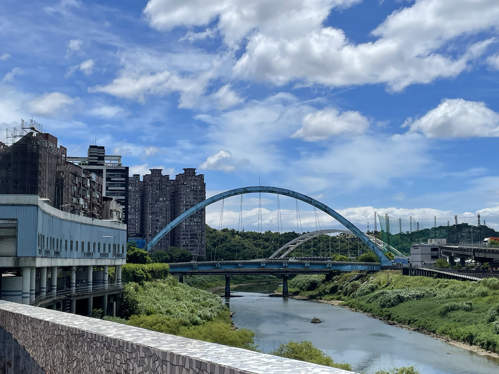
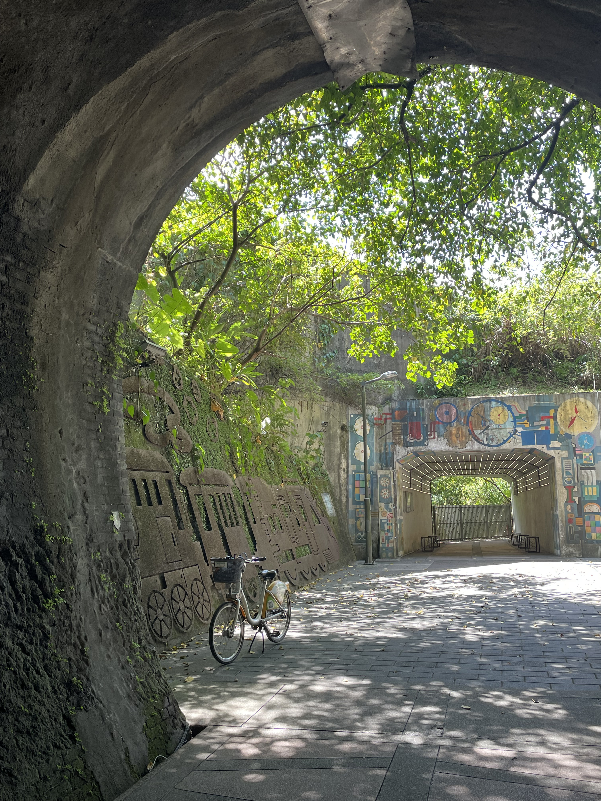
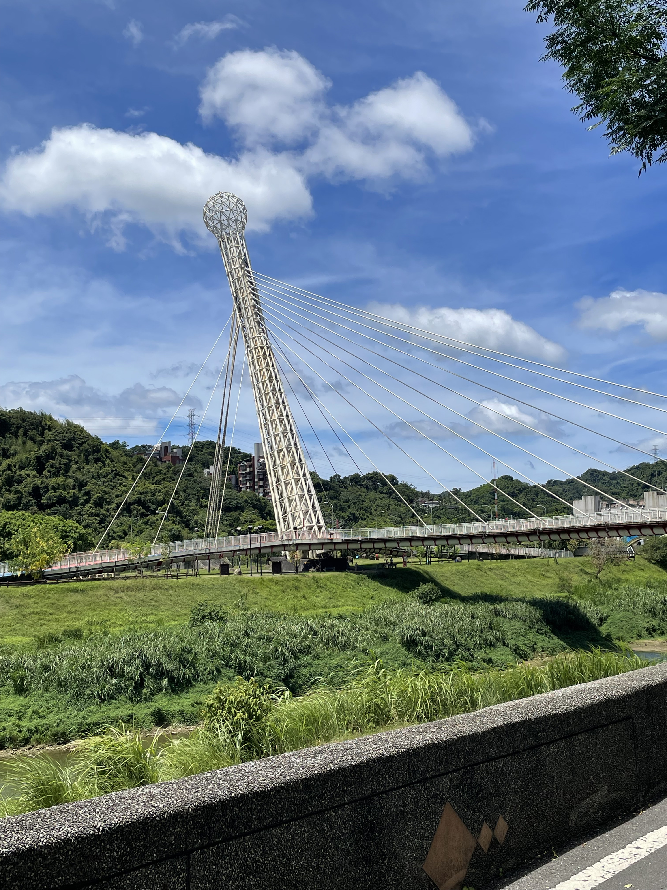
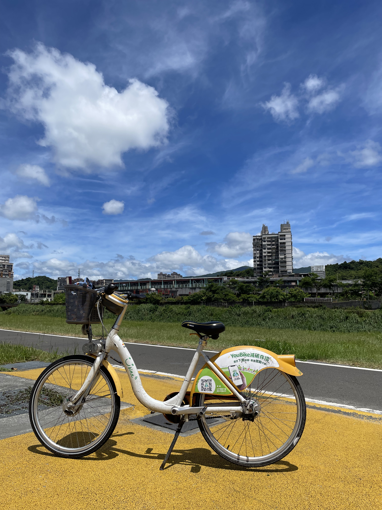
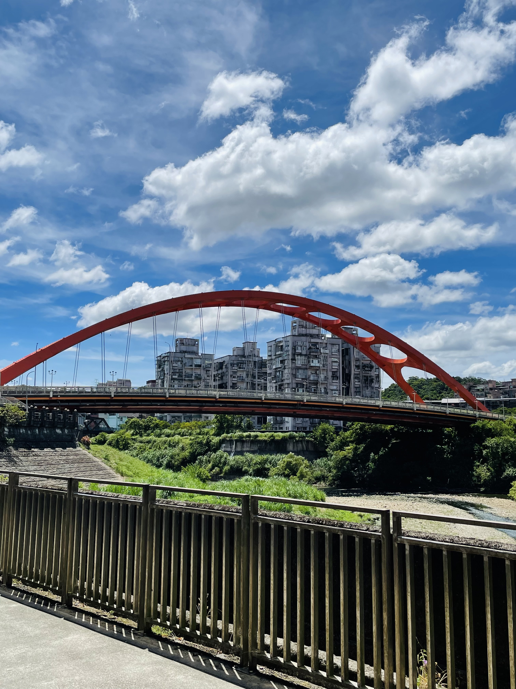
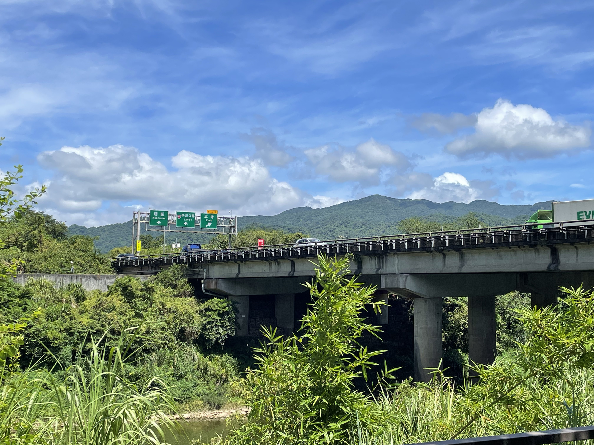

新北市汐止區
基本資訊
位於新北市東側，介於台北市與基隆之間，地形以丘陵與河谷為主，基隆河貫穿其中，使汐止自早期即成為交通與聚落發展的重要節點。日治時期因鐵路與煤礦產業而興起，逐漸發展為工業與居住並存的城鎮。 隨著都市化與交通建設完善，汐止成為許多通勤族居住的衛星城市，同時仍保有自然景觀與山林環境。河岸、步道與周邊山區提供市民休閒空間，使汐止在都會機能與自然生活之間取得平衡，呈現出新北市中具有轉換性與多層次發展特色的區域樣貌。
推薦景點
| 汐止基隆河自行車道
沿著基隆河河岸延伸，是結合城市通勤與休閒運動的重要路線。車道視野開闊，騎行途中可欣賞河岸風景、遠山輪廓與城市街景，呈現出汐止由工業城鎮轉型為宜居城市的樣貌。沿線規劃平緩，適合各年齡層使用，不僅是假日騎乘、散步放鬆的好去處，也讓人以較慢的節奏重新感受基隆河與城市生活之間的關係。
| 五堵鐵路隧道
是汐止區一處結合歷史記憶與休閒轉型的空間，原為台鐵縱貫線舊隧道，在鐵路路線改道後退役。隧道保留了早期鐵道工程的結構特色，紅磚牆面與拱形隧道營造出濃厚的懷舊氛圍，讓人能直觀感受過往鐵路運輸對地方發展的重要性。 經整理活化後，五堵鐵路隧道成為基隆河自行車道與步行動線的一部分，從交通設施轉變為市民休憩與探索歷史的場域。行走其間，光影在隧道內交錯，連結的不只是河岸與社區，也象徵汐止從工業與交通節點，逐步轉向生活與文化共存的城市樣貌。





